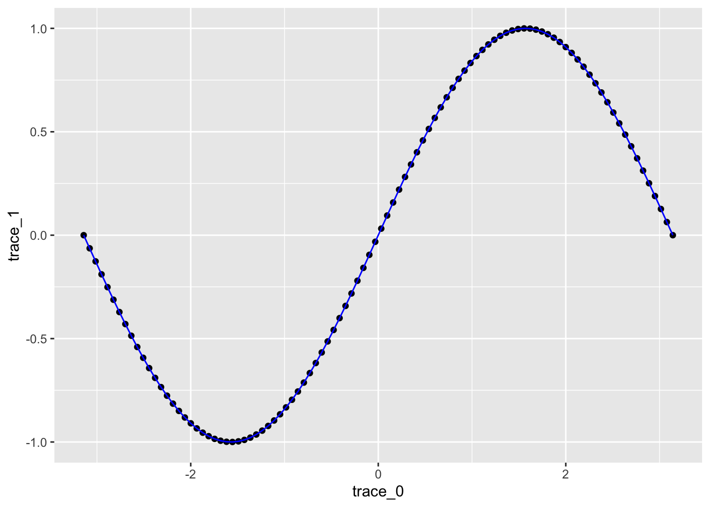
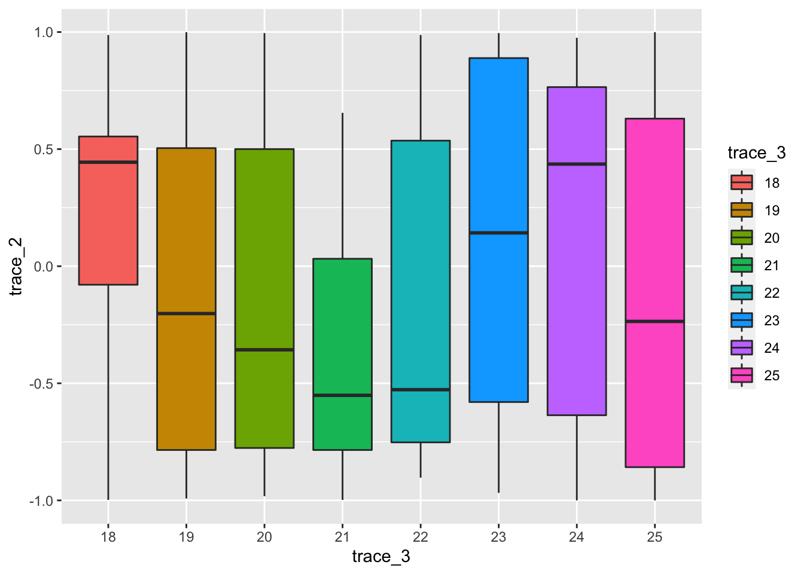

Lab sheet 9: Practice session
Revisit dataframe
x.val<-seq(from=-pi,to=pi,length.out=100)
df <- data.frame(trace_0=x.val,trace_1=sin(x.val),trace_2=cos(x.val),trace_3=factor(sample(x=18:25,size=100,replace = T)),trace_4=rnorm(100))Revisit ggplot2 and plotly
library(ggplot2)
library(plotly)ggplot(df, aes(x = trace_0, y = trace_1)) +
geom_point()+
geom_line(color = 'blue')
ggplot(df) +
geom_histogram(aes(trace_4), bins = 10)
fig1<- ggplot(df) +
geom_boxplot(aes(trace_3, trace_2,fill=trace_3))
fig1
ggplotly(fig1)under development
Copyright © 2022 Biswarup Biswas. All rights reserved.